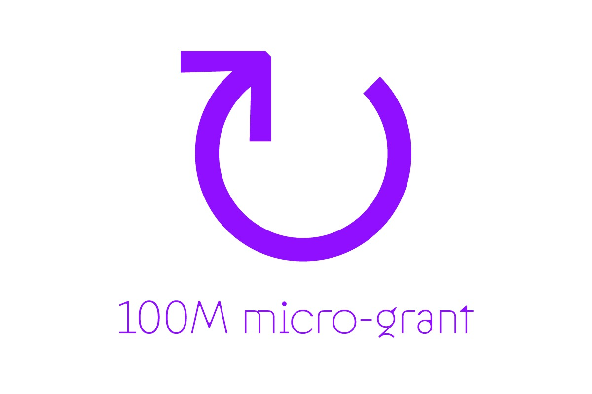
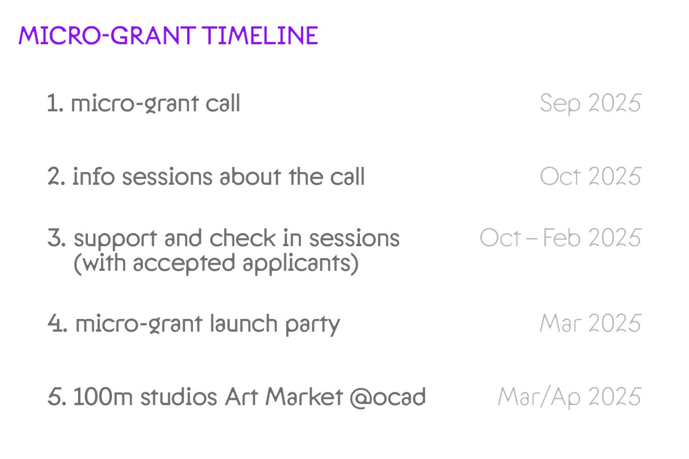

100m Studios
is launching its first publication micro-grant! After 2 years we are
eager to give back to our community!Throughout the past two years we published 3 student press publication + typejournal (a branch of 100m/a studio). And we have made a small revenue selling these publication; so now we want to give back to our community and open these opportunities to other OCAD students.
The grant money will be allocated to groups of student initiating publication projects of their own. This is a great chance for them to reflect on their practice and create alongside other peers.
Our call starts in Sep (asap) and projects will hit the ground running after the info session in OCT. During this period the accepted applicants will receive support from us and can checkin in our monthly sessions. In March we’ll be hosting a launch party for our grant cohort, giving them a chance to talk about their experience while sharing their craft with friends and peers.
Finally to wrap up, we’ll be hosting a 100m market featuring our grant cohort + other vendors and students from OCAD. A chance for everyone to generate money from their labour but also engage with other students, faculty, members of public etc.
By donating to this cause you’ll help us support and create more publications, more collaboration, more care and more generosity.
